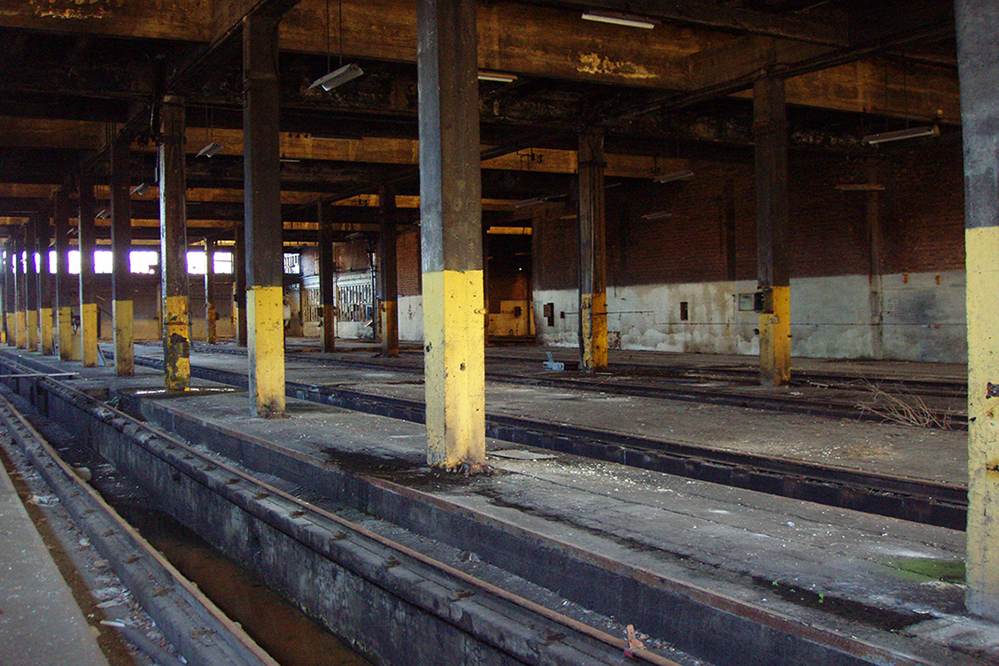
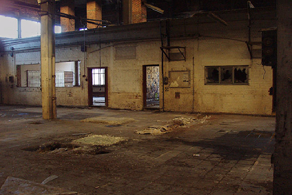
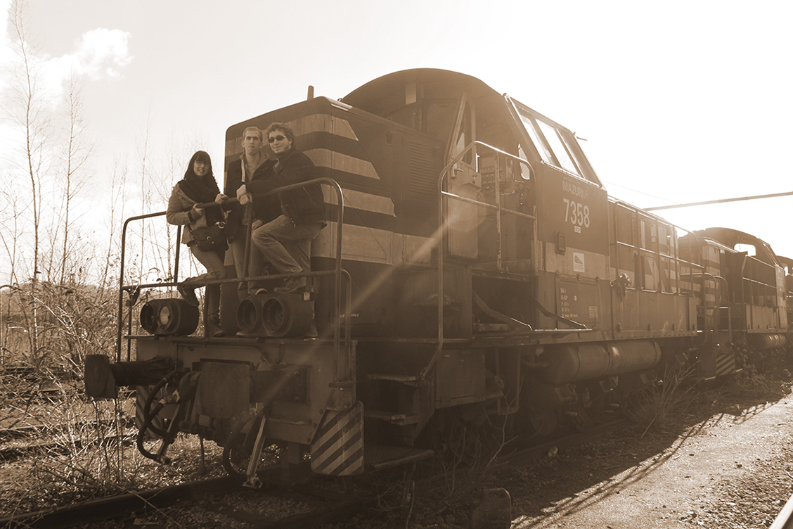

My first urban exploration.
this is an underlineCela fait maintenant plusieurs mois que j'ai découvert l'urbex, cette activité peu conventionnelle qui consiste à visiter des lieux construits par la main de l'homme et désaffecté depuis longtemps. C'est en parcourant la toile sans but particulier que je suis tombé par hasard sur des articles parlant de cette pratique dont je me suis immédiatement intéressé. Et le hasard faisant bien les choses je me suis vite aperçu que Mathieu et Laura, deux de mes amis, en faisait. J'ai donc rejoint leur petit groupe et sommes allés ensemble à la rencontre d'un vieil hangar de train désaffecté.
Un espacementCe fut ma première expédition, ce fut le début d'une longue série. Après des années à essayer tous les sports et toutes les activités artistiques possible, j'avais par un simple concours de circonstance trouvé une activité qui semblait combler un vide que je ressentais depuis longtemps.
Un espacement Un espacementThe arrival.
this is an underlineAutrefois un hangar de maintenance de la Société Nationale des Chemins de fer Belge (SNCB) pour les trains nationaux ou de sociétés privés, ce n'est aujourd'hui plus qu'un cimetière faisant office de dernière demeure pour de nombreux trains en fin de vie. L'endroit est une étrange combinaison de vastes hangars où la voix se perd en écho et de petites salle plongé dans l'ombre et dans la ruine. Le tout abîmé par le seul pouvoir du temps. Le déclin naturel.
Un espacementNos yeux sont vite remplacés par les objectifs de nos appareils photo, et chacun d'entre nous oublie la présence des autres. Il n'y a plus que la rouille, les bris de verres, les murs décrépits, l'atmosphère qui ont de l'importance et le silence n'est rompu que par le cliquetis de nos appareils pendant plus de 2 heures.
Un espacement  Un espacementThe main area.
this is an underline
La première salle où je m'attarde est le hangar principal.
Un espace immense, parsemé de piliers en bétons rythmé de bandes de
peintures jaune. Où une imposante locomotive attire le regard.
Seul un numéro de série et le logo de la SNCB sont visibles de l'extérieur
et je n'en saurais plus sur elle qu'en montant dans la cabine. Là au milieu
des débris, un mot ressort: Cockerill.
Cockerill c'est le nom de l'acteur
principal de l'industrallisation de la belgique dans les années 1800.
Maintenant disparue car racheté par une société plus grande
(ArcelorMital), son nom hante toutefois toujours de nombreux sites
industriels abandonnés en Belgique.
The scar.
this is an underlineA nouveau les pieds sur terre je décide de me diriger là où mes amis s'étaient aventuré. Un hangar plus petit m'attend où un sol éventré pique ma curiosité, comme si une chose très lourde était tombée et trainée par terre jusqu'à déchirer le béton lui-même. Quel est l'origine de cette fissure dans le sol? Aucune idée et je me le demande toujours.
Un espacement Un espacement
Un espacement
Blue rooms.
this is an underlineEn continuant par un couloir sur ma gauche, une succession de petites salles la plupart dallés de bleu m'attendent. Des salles de bain, des toilettes et ce qui pourrait être un réfectoire sont dans un état de détérioration avancé.
Un espacement  Un espacementDarkness.
this is an underlineNous décidons ensuite de faire un tour dans les sous-sols qui se revèlent être franchement petit par rapport à la superficie totale de l'endroit. Et l'obscurité est telle que nous ne pouvons nous repérer qu'en usant du flash de nos appareils, mais rien de très intéressant à voir si ce n'est de constater que même les araignées n'ont pas survécus à la stérilité des lieux et se sont retrouvées momifiées.
Un espacement Un espacementOutside.
this is an underlineNous nous précipitons ensuite vers l'extérieur où une végétation abondante nous attend, tentant de dissimuler jalousement d'autres locomotives (elles aussi estampillés cockerill pour la plupart.) Nous décidons donc de suivre les rails partant du hangar pour aller à leur rencontre. Je jette un oeil un peu plus loin pour constater que nous ne pourrions de toute façon pas aller plus loin car au bout de plusieurs metres la végétation piquante et sèche bloque le passage.
Un espacement Un espacement
Nous constatons également qu’à coté de cet hangar abandonné, à environ 500m, un autre complexe
appartenant vraissemblablement aussi à la SNCB est lui toujours actif et nous entendons sans réel
distinctions les bruits des machines et des ouvriers.
J’en reviens aux locomotives où la plus imposante, ayant également trois wagons rattachés à elle,
porte le nom de Mazurka dans sa cabine. Un nom dont je n'ai rien pu savoir par la suite, si ce n'est
qu'il s'agit également du nom d'une danse polonaise.
Le reste de l'exploration s'est soldée par une déception pour moi: plus de batterie! Impossible donc de prendre plus de photos. Je n'avais franchement pas prévu le coup, Je ne suis pas prêt d’être photographe. Je me suis alors hissé sur le toit de celle que j'ai baptisé aujourd'hui la polonaise et me suis mis à observer ce lieu pendant que Mathieu et Laura faisaient des prises de vues avec un pied plus loin.
Un espacementIn memories.
this is an underlineCe lieu, bien que décrépit et un peu dangereux de par son état précaire, était un endroit très apaisant à visiter. J'ai exploré ce lieu armé de mon appareil photo en quête de formes et de lumières inhabituelles à saisir, mais j'y ai également appris quelque chose.
Un espacementIl est de bon ton de ne penser qu'au futur et de ne jamais regarder en arrière. D'aller de l'avant. Mais en cet instant, devant cette vision du passé j'ai dressé un constat: Le futur est inconnu, le présent est éphémère mais le passé, lui, est éternel. Je n'ai pas vu en cela une vision pessimiste des choses, bien au contraire. Toutes les actions que nous entreprenons ont du sens. Elles ont du sens car elles resteront d'une manière ou d'une autre gravés dans le temps et dans les mémoires. Tout comme les gens ayant construits et ayant travaillés dans ces lieux. On ne se souvient peut-être pas d'eux mais ce qu'ils ont accomplis demeure.
Un espacementC'est alors que Mathieu me tire de ma rêverie. Il vient d'installer son pied devant la polonaise et m'attends pour une photo de groupe. Nous avons laissés une trace de nous dans ces lieux, et ces lieux ont également laissés une trace dans nos mémoires.
Un espacement  Un espacement Haut Un espacement0 comments.
Un espacement Un espacement
Un espacement
Leave a comment...